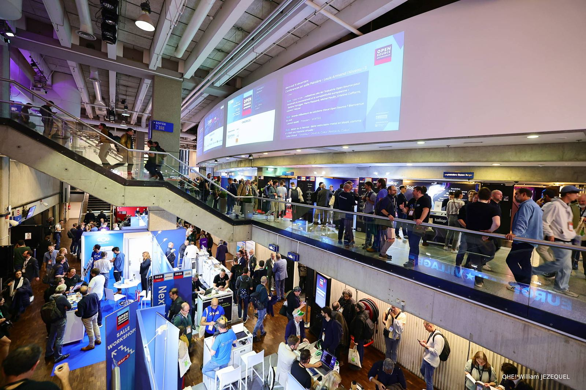

Conferences · Tech
Open Source Experience 2026
- Dates
- –
- Venue
- Paris Expo Porte de Versailles, Hall 5.2, Place de la Porte de Versailles, Entrance A1, 75015 Paris
- Location
- Paris, France
- Format
- In-person
- Category
- Tech
- Industry
- Tech
- Official website
- https://www.opensource-experience.com/en/
About
Dates are local to the host city (Central European Time, UTC+1 / UTC+2 in summer).
Topics: open source, software.
No organiser attendance figure found on the official pages fetched 24 Nov 2026. Ranked by our estimated size tier 'medium' (10,000-30,000 attendees/visits), a judgement from format, venue and scale, not an official number.
Sources
- Official — https://www.opensource-experience.com/en/
- Official — https://www.opensource-experience.com/en/pratical-informations
Venue
- Paris Expo Porte de Versailles — Exhibition grounds · 1 Place de la Porte de Versailles, 75015 Paris